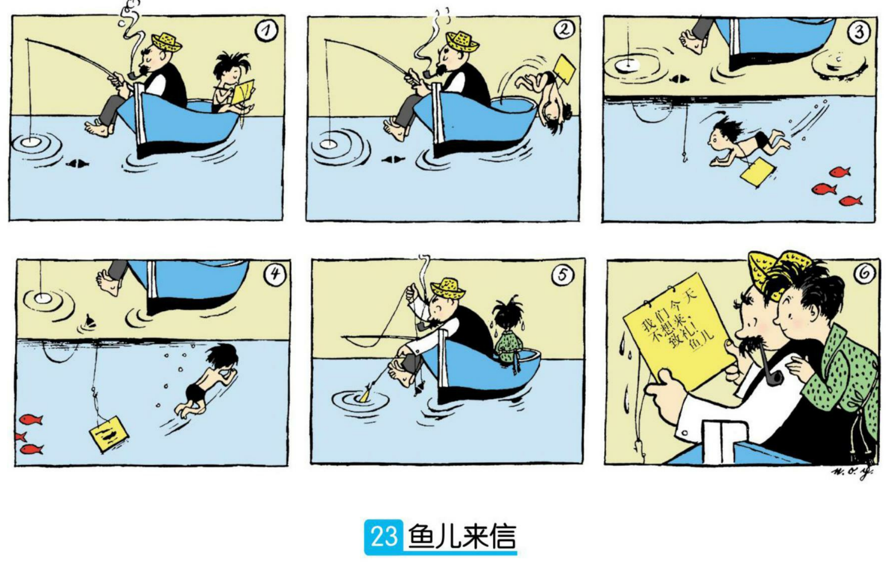
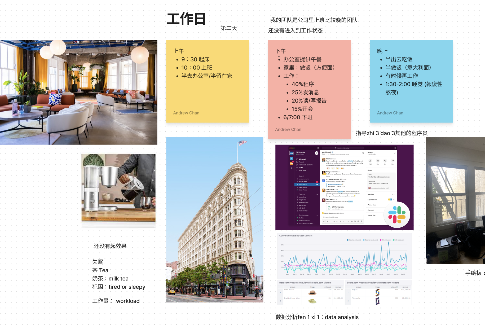
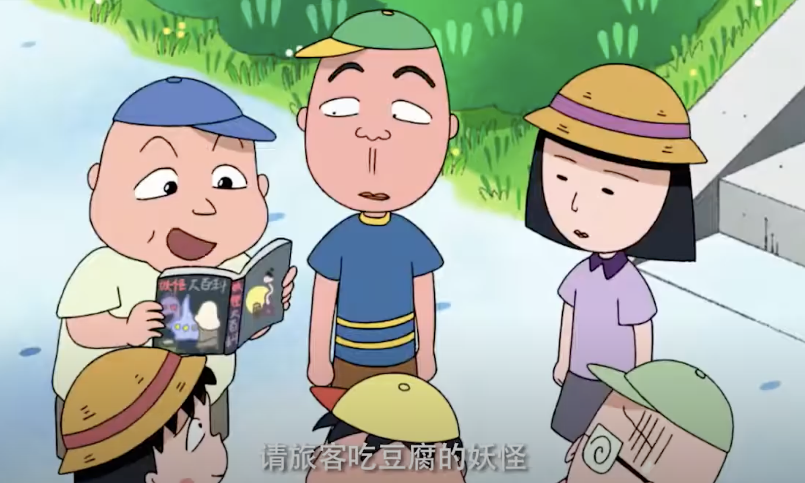
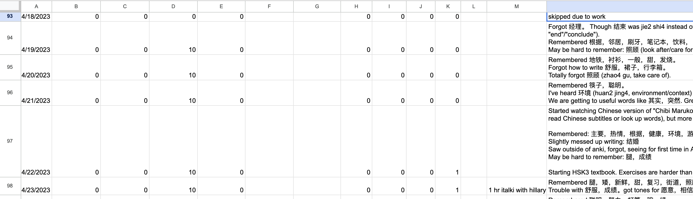
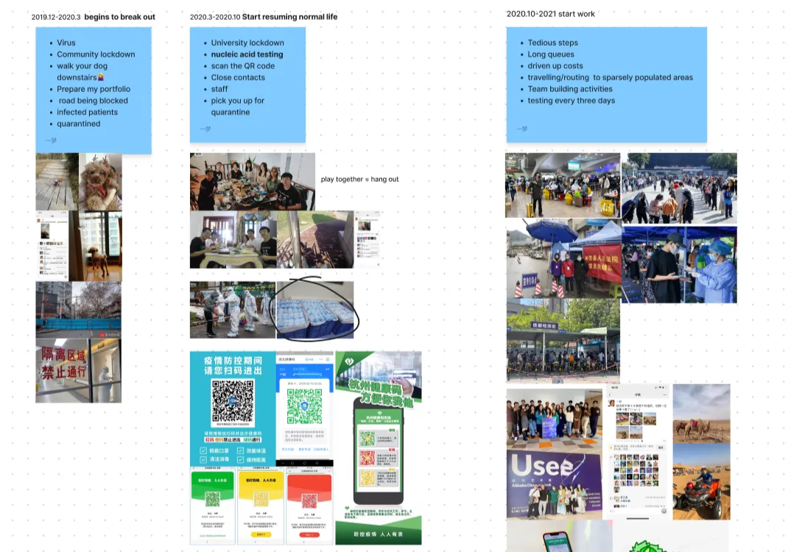

Contents
My Mandarin Learning Journey
I've always been a little embarrassed by my Mandarin, which was poor even for an ABC growing up in a Cantonese household. Last year, inspired by friends and embarrassed by not being able to order food in Chinese at Chinese restaurants, I decided to get better at it, and spent much of the year self-studying the language, culminating in a month-long trip to Taiwan in December to test myself.
In this first post, I'll talk about my time learning Mandarin, which was one of the most fulfilling learning journeys I've ever had. In the second, I'll talk about my Taiwan trip, which turned out to be a fascinating cultural deep dive on its own.
Background
I didn't start from zero. But my skills left a lot to be desired:
- I don't speak Mandarin at home: my family speaks Cantonese instead.
- I did attend a weekend Mandarin Chinese school for several years as a kid, but hated it because everyone else was Mandarin native.
-
The school was aimed at bringing students to HSK 3
Or HSK 4. I don't remember exactly. But whatever it was, I most definitely did not reach that level. level, but wasn't rigorous. I barely passed the HSK exam at the end of the program; in fact, I remember my teacher suggesting that I cheat because of how bad I was at Chinese. - Then after graduating high school, I didn't use Chinese for over seven years. At the beginning of 2023, I couldn't read or write Chinese script beyond the most basic hanzi, and I had forgotten most Mandarin vocab, even simple things like colors.
To narrow things down, I decided to give myself 3 high-level goals:
- Develop conversational competence
- Communicate with more Chinese people
- Be able to order food at a Chinese restaurant
- Travel abroad in some Chinese-speaking land
I also picked one concrete goal: pass the HSK 4 exam. There's 6 HSK levels and HSK 4 is roughly B1 on the CEFR fluency scale, which is enough to have decently deep conversations about experiences, hopes, and dreams, and to deal with most situations that happen when you're traveling in China, which was goal #4.
The plan
The standard advice I've heard for adult language learning is: there's no single secret sauce (although many resources are known to be useful for many people), and you kind of just have to try everything and see what really works for you. The key is not to keep stopping and starting anew though - you should always be progressing in some way, and using your language every day. Language is use-it-or-lose-it like nothing else, and a little bit every day is better than a lot once a week.
I did start out with a study plan based on Izzy Sealey's part-time study plan, and through some iteration, ended up with the following, which took 10-16 hours a week depending on how much time I could spare:
- HSK standard course textbooks: 5-6 hours a week
- Anki vocab: 20 minutes a day
- Tutoring via iTalki: 1-2 hours a week
- Language Exchange: 2-4 hours a week
- Comprehensible input: 0-2 hours a week
HSK standard course textbooks. This formed the backbone of my study plan early on; I had forgotten much of my original Chinese school education, and what's more is that I wasn't even sure that what I had learned was comprehensive. Having a standardized curriculum gave me confidence that I was learning phrases and patterns actually used in modern Chinese speaking/writing, and the textbook provided complete explanations of grammatical structures which would be difficult to learn through either comprehensible input or Anki decks. The exercises - especially the listening ones - were very helpful early on, when my Mandarin wasn't good enough to carry out a conversation with a language partner. The listening exercises start out very slow, but get progressively harder: the HSK4 ones are no joke!
Anki vocab. If the HSK standard course was the backbone of my learning, then my vocab deck was the meat. Becoming fluent in any language requires a staggering amount of vocab, and Chinese is foreign enough that English speakers actually need to memorize individual vocab words (rather than a set of rules to convert between languages), at least at the beginning. It's very easy to forget words if you never use them after learning them, but it's obviously impractical to review every vocab word you learn every day after you learn it. Serious language learners swear by spaced repetition software: I used Anki with a pre-made deck of HSK vocab words.
Tutoring via iTalki. I can't recommend having a tutor enough; they provide so many things. Three of the most important: accountability, quick and useful feedback on speaking, and help finding important improvement areas. Good ones on iTalki can run $20-30 per hour, which is amazingly cheap for what you're getting.
I found a tutor who also spoke Cantonese, which I'm a bit better at than Mandarin due to using it at home. This gave me a speed boost early on because the languages are close enough that I could guess-and-check some phrases that I already knew in Cantonese with my tutor, but more importantly, it helped me un-learn some bad habits that I had gained by assuming certain phrases in Cantonese would be said some way in Mandarin (and never being corrected by anyone). For example, “to work” is “做工” (zou6 gung1) in Cantonese, but it sounds effectively reversed in Mandarin, where you say “工作” (Gōngzuò) instead.
Can you describe what's going on in each of the six panels in your target language?
Regarding finding improvement areas: one exercise my tutor would give me would be to talk about the events depicted in a comic. This is something any five-year old can do, but is surprisingly hard for many adult learners despite memorizing reams of vocab. For instance, given the above comic, I was able to talk fluently about how the man is fishing and smoking and the boy is swimming, but realized I couldn't describe the important details that the boy was sitting behind the man, and swam under the boat, etc. - I'd forgotten my prepositions!
Language exchange. I started to do language exchanges after I became comfortable enough to hold conversations in Mandarin, and they were the funnest part of this whole process. One of my goals was to communicate with more Chinese people, and language exchange apps like Tandem and HelloTalk put me in touch with a huge array of Chinese who wanted to do the same with Americans.
I used FigJam - which luckily isn't blocked in China - as a visual aid for language exchanges.
Learning-wise, they were the main way for me to “touch grass” and exercise my skills by talking to real humans about real stuff. This was not only enormously motivating but also an excellent source of feedback on whether I was learning the right things.
Exchanges would consist of 2 hour phone calls with a buddy where we'd spend 1 hour talking in English and another in Mandarin; I'd generally come away with a list of words or phrases that I'd add or accelerate in my Anki deck, and a bunch of learnings and questions I had about life in China.
Comprehensible input. You might think that watching media in your target language with English subtitles is a good way of learning. This may be true for some, but not for me - I quickly stop processing the audio in favor of just reading subtitles. I instead allocated time to watch “comprehensible input” - media without subtitles where you can understand 75% of what people are saying, and can learn what you don't through context. This way your brain is forced to actually exercise its listening comprehension to get that juicy TV dopamine.
A theory developed by a linguist named Stephen Krashen in the 70s says that comprehensible input is actually the most important method of building fluency, because it's the only form of language learning that occurs subconsciously. I don't really buy that, but it was a fun way to discover new vocab and exercise my listening that wasn't as taxing as a tutoring session or language exchange.
Chibi Maruko-Chan is a step above Peppa Pig - the characters actually have hopes, dreams, opinions, expectations, get into sticky social situations, etc. Plus there are tons of Chinese dubbed episodes on Youtube!
My comprehensible input basically consisted of children's cartoons; I started out with Peppa Pig and eventually moved to children's anime dubbed in Chinese, e.g. 樱桃小丸子 (Chibi Maruko-Chan). This is another thing that five-year olds can do easily but adults have a hard time - Maruko-Chan might not talk about complex ideas, but she talks really fast and uses a surprisingly huge variety of simple words!
Language learning tech
Language learning tech is super advanced nowadays. Spaced repetition software was the tech I used the most, followed by the offline dictionary Pleco. One bit of a tech that I didn't use that frequently but was a game changer nevertheless was ChatGPT, which is by now far and away the best translation software out there. I found it indispensable for communicating better with language buddies, mostly when I wanted to express something with a little bit of nuance - for example, asking it "how do I say X but in a more light-hearted way?".
One reason I didn't use ChatGPT more is because at the time it didn't have good voice capabilities, and getting better at texting mostly doesn't translate so well into speaking competence. I'm excited about what the future holds once we can have AI voice tutors, though I personally find the human touch of real tutors to be essential.
Tracking progress
A look at my study progress spreadsheet. The numbers record how many Anki cards or textbook chapters I finished, while the right-hand are notes about my studies, like "I forgot word X today".
I found tracking progress closely very important; I used a spreadsheet where I recorded what I learned every day. Making progress was really satisfying, and the daily tracking provided real accountability - missing days was visual, and felt bad.
When I stopped recording on December 5, I'd studied 3899 cards (the entire HSK deck has 11800 cards, and around 4200 between HSK1-4), or about 1950 vocab words. I'd also completed 61 iTalki lessons and 60 chapters from the HSK textbooks, including all of HSK 1-3.
I didn't end up taking the HSK exam after all. While the test provided a concrete set of tasks to complete, I realized halfway through that the vast majority of fulfillment I felt was from getting better at conversing with people. So I deprioritized studying the textbooks each weekend and instead made more time for language exchange. And eventually, on visiting Taiwan and starting a month of Chinese immersion, I stopped studying the textbooks entirely.
You begin to understand a place only when you learn the language
This oft-cited as a reason to learn languages, and it is truer for China than most other countries, given how insular it is and how bad the English of most Chinese is (despite it being a required subject in Chinese schools).
Do I feel like I now deeply understand China? Not quite. But I've been exposed to far more aspects of society and culture than what I might glean from mostly politicized media reports about China, or from talking to Chinese friends and family already in America, who mostly immigrated many years ago and invested in a life far divorced from the China that they came from (which by all accounts is from a different era).
It starts with talking to more people. Through language exchange, I found stories that I could relate to on a human level, by talking to and making friends with Chinese people - who I wouldn't have connected with otherwise, because of their poor English - about their lives in different cities and industries. Some of these stories revealed interesting aspects of how daily life in China was different than the West, while others shed new light on events or phenomena that I had seen only from a Western angle.
A FigJam my buddy made for language exchange about COVID life in China.
- For instance, I had some idea that COVID restrictions in China were intense, but I learned from my language buddy in Hangzhou that essentially every neighborhood in the city was walled off, and that as late as 2022 everyone still had to take a COVID test every 3 days.
-
Another common theme was how crowded China was. Nearly everyone I talked to mentioned how cities had so much people that competition in nearly all aspects of life was inevitable.
- Work-life balance was also consistently poor, though I'm not clear on how much of this is due to competition versus a top-down Asian culture of “work is life” being begrudgingly accepted by a younger populace.
- One language buddy told me about how when a national holiday happens, everyone gets off during the week but then has to work an extra day on the following weekend - but that people just show up to the office then and goof off on the computer!
The iceberg of Chinese media. But I barely scratched the surface of the world of Chinese media and internet. I'm still not at the point where I could comfortably read a news article or watch a drama without subtitles. And while I learned that meme culture is thriving on Bilibili (which was surprisingly less censored than I thought it would be), I can't understand most memes yet, either.
This is where things start to get really interesting. There's only so much you can learn from the little bits and pieces that Chinese people who bother to learn English (or English speakers who bother to learn Chinese) choose to talk about.
So far I've only talked about China, but I find this to be just as true for Taiwan. I'll cover this in more detail in the next part of this post, but suffice to say that while Taiwan is a bit more English friendly and far less blocked-off to the Western world than the PRC, the problem still exists to a large degree. Living and understanding it with only English is like trying to understand marine life from a boat: you only see what floats up to the surface.
Conclusion
TL;DR: learning Mandarin Chinese was fun and useful, and what worked well for me was doing a little bit of studying every day using methods that required output, like talking to tutors and real people each week.
What's next for me? I'm now no longer self-studying with intention, and have switched to “maintenance mode” where the bulk of my studying is now Anki review with a reduced number of daily cards. I still keep in touch with language buddies but have stopped other activities. While last year was the “get better at Chinese” year, this year has been taken up by other hobbies - side projects, technical learning, starting this blog, running, and drawing.
Will I return to Chinese again? Almost certainly. I'd like to move beyond my six-year-old-level of fluency, and I still haven't been to China; I ended up going to Taiwan instead at the end of last year. There is so much more for me to learn, and as I found in this journey, the act of language learning itself is incredibly fun. Finally, Chinese is a part of my heritage, and reclaiming it (both via Cantonese and Mandarin) is a way for me to connect with the culture and community that I came from. Chinese has a term “华侨” (Huáqiáo), which means “overseas Chinese”, but translated literally means “Chinese bridge”. I'd like to think that that bridge is what I'm building.
Appendix
Many of the resources I listed in this post are standard in language learning communities. Two of the most helpful I found were:
For comprehensible input, there are some compendiums of resources like Heavenly Path. I found these YouTube channels most useful:
- Chibi Maruko-Chan Chinese - Mandarin-dubbed version of a popular children's anime.
- Mandarin Corner - This provides HSK-leveled casual Chinese conversation videos.